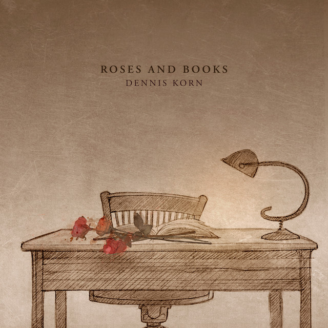
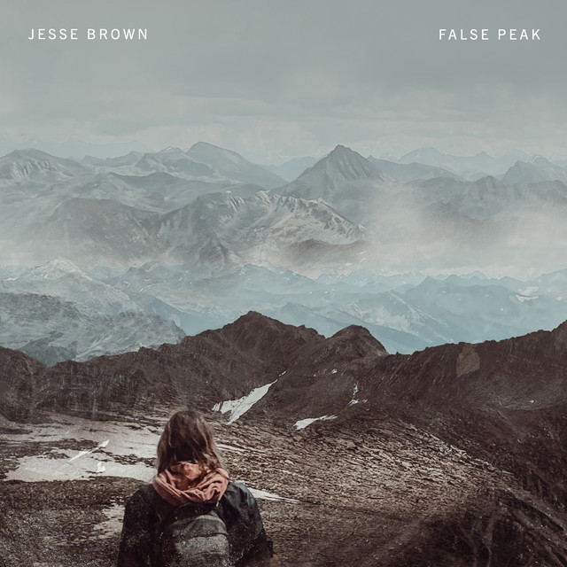
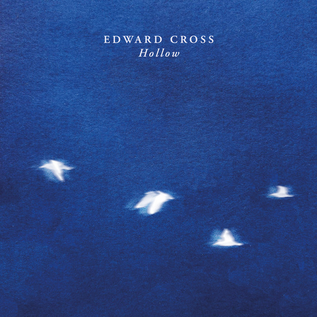
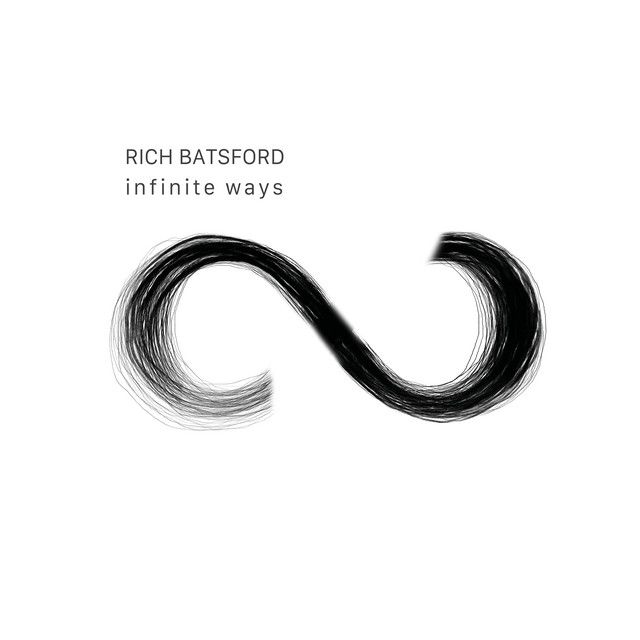
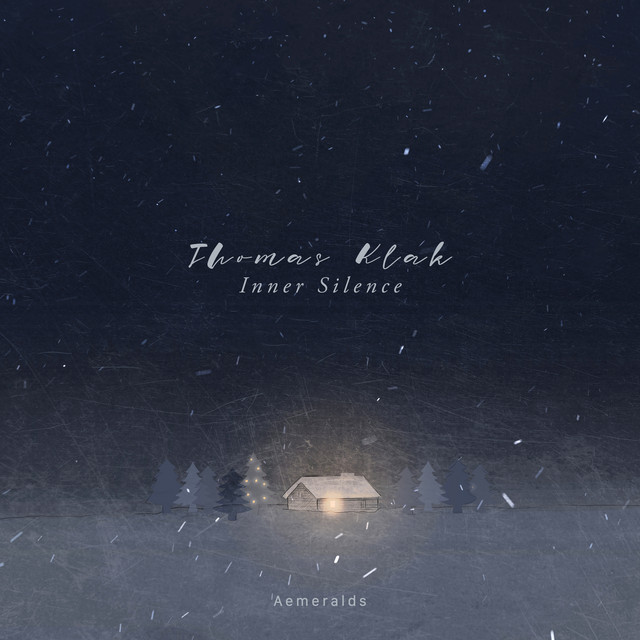
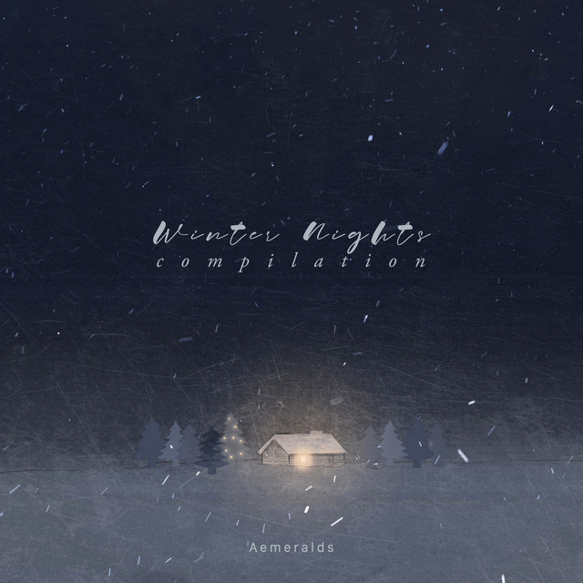
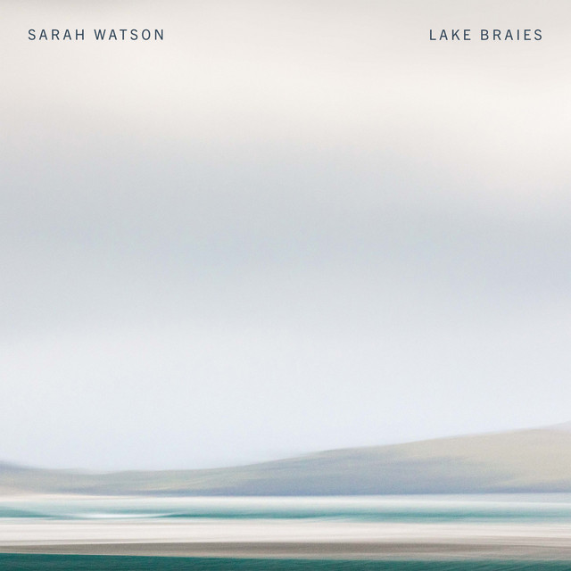
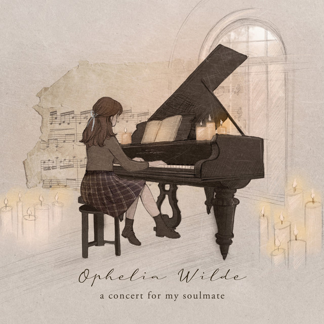
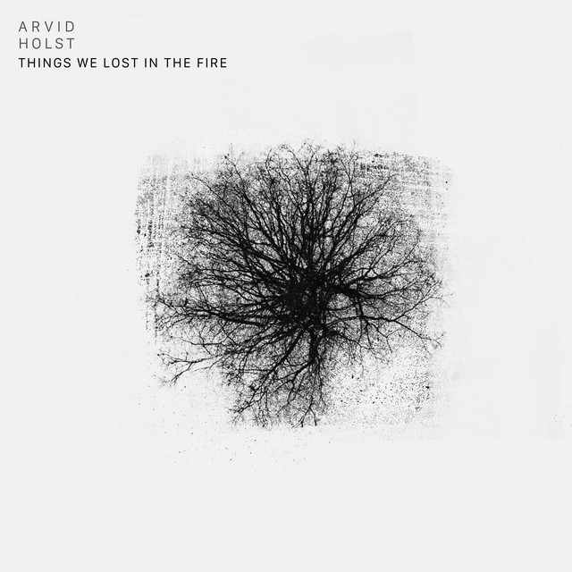
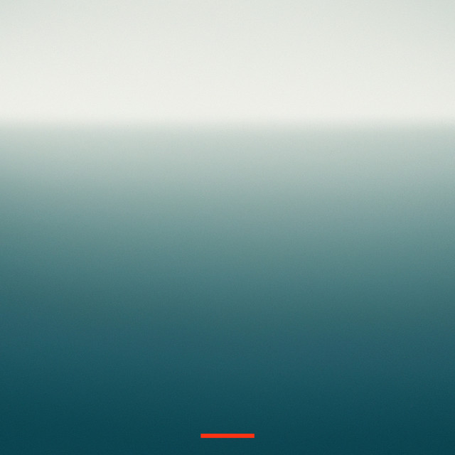

"Anyone who has never made a mistake has never tried anything new." - Albert Einstein
City of Light by Louis Mercier
Coming Home by Dennis Korn
False Peak by Jesse Brown
Hollow by Edward Cross
Infinite Ways by Rich Batsford
Inner Silence by Thomas Klak
In time by Pieter Savenberg
Joy to the World by Henri Bentley
Lake Braies by Sarah Watson
Le matin by Jonas Hain
lost in time by Ophelia Wilde
Lost Without You by Arvid Hoist
Noire by Marius Nitzbon
Pres de toi by Jonas Hain
Reunion by Nicholas Bamberger
The Rose Garden by Dennis Korn
Time To Tell by Kristoffer Wallin

Winter Peace by Tom Kristiaan